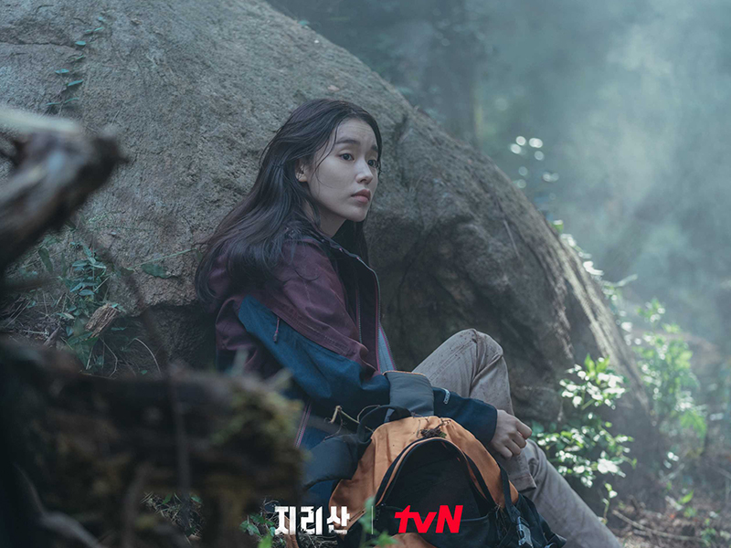

- 

누구보다 산을 사랑했지만 불의의 사고로 코마상태에 빠진 남자는 귀신이 되어 산을 떠돌고
누구보다 사람들을 구하려고 노력했던 여자는 휠체어에 올라 더 이상 산에 오르지 못하게 된다.
서로를 볼 수 도없고 만날수도 없지만 지리산이 그들에게 준 특별한 선물고 그들은 산에서 위험에 처한 사람들을
또다시 돕기 시작한다. 더 이상 사람들이 산에서 죽지 않도록 할 것이다. 자신들의 생명을 걸고
산을 지키며 진실을 밝히려는 레인저 이강과 현조의 이야기를 그려보고자 한다.
육사 출신의 전직 육군 대위로 지리산 행군 훈련 때 부하를 잃는 사고를 당한 뒤 이해할 수 없는 환영을 보기
시작했다. 지리산에서 죽음을 당하는 사람들이 보이는 것이다. 왜 어떻게 자기 눈에만 보이는지 이유는 알 수 없지만
산이 사람들을 살리라고 준 선물이라고 생각하고 지리산으로 돌아왔다.
흙길, 너덜길, 암벽, 절벽 등 산을 어떻게 타야 하는지 본능적으로 알고 있고, 조난자의 배낭에 묻은 풀잎
하나만으로 조난 장소를 알아맞출 정도로 기후, 식생 분포, 토질에도 박학다식하며, 작은 샛길, 숲길까지 익숙한
내비게이션 기능까지 탑재되어 있다. 동료들에게 산귀신 서마귀라고 불릴 정도로 구조에 관해서는 그 누구보다
뜨겁지만 산을 바라보는 시선은 냉소적이기만 하다. 그녀에게 산은 곧 죽음이기 때문이다.
근무가 힘든 지리산을 벗어나 본가가 있는 경기도로 발령받기 위해 승진시험에 목을 매지만 번번이 낙방의 고배를 마셨다.
'내가 살아야 남도 산다'를 입버릇처럼 달고 사는 극현실주의자. 퇴근 시간은 칼이고 휴가는 당연한 거고 월차 역시 놓칠 수 없다.
레인저로서의 투철한 사명감과 우직함으로 모든 사람들의 존경을 받아왔지만, 가족들에게는 늘 필요할 때 곁에 없는
사람이었다. 결국 가족들은 그를 떠났고 이제 그에게 남은 것은 지리산뿐이다. 그렇기 때문에 더욱 구조에
모든 것을 바친다. 국립공원과 후배 레인저들에 대한 책임의식이 남다르다.
순발력은 약하지만 우직한 근성으로 똘똘뭉친 융통성 없는 강원도 산사나이.
국립공원에서 만난 사내커플끼리 결혼해 부인은 설악산에서 근무중이다. 한 가정의 가장으로서 투철한 책임감으로 승진시험에 패스.
지리산 동기들 중 유일하게 팀장을 달았다는 자부심이 가득하다.
꼼꼼하고 조용하고 미소조차 사근사근하다. 타고난 체력이 약해 구조 활동은 힘들지만, 분소의 모든 궂은일을 도맡아
하며 레인저들을 서포트한다.
어느 곳, 어떤 상황에서건 좋은 일, 즐거운 일, 기분 좋은 일을
발견하는 엄청난 능력을 가진 분위기 메이커.
핸디캡이 있는 이강이 분소로 복귀한 후 이강의 능력과 매력에 반해 자신의 롤모델로 삼는다. 산을 오르지 못하는
이강을 대신해 그녀의 부탁을 들어주던 중, 피투성이가 된 채 산을 헤매는 현조와 마주치게 되고..
지리산과 관련된 문화, 역사, 인문학에 빠삭한 모범생 스타일의
외골수. 산신제, 무속, 성모 신앙에 관련된 행사나 지리산에
남은 역사적인 흔적들이 발견될 때마다 가장 먼저 나타난다.
2018년 여름. 지리산 국립공원 해동분소로 발령받은 신입 레인저 강현조는 출근 첫날부터 허겁지겁 구조현장으로 투입된다. 지리산에서 실종된 중학생, 살리려면 태풍이
오기 전에 한시라도 빨리 찾아야 한다. 산에서만큼은 독하고 가차 없어 일명 '서마귀'라 불리는 노련한 레인저 서이강과 조를 이뤄 수색에 나서는 현조.
폭풍우가 몰아치는 가운데 수많은 레인저가 목숨을 걸고 조난자를 찾아 나서지만 도저히 행방을 찾을 수가 없는데.. 그때 현조의 눈앞에 환상처럼 어떤 모습이 불현듯 펼쳐진다.
비번인 날에도 현조는 어김없이 지리산에 오른다. 꼭 찾아야 할 무언가가 있기 때문이다. 그런데 그때 또다시 환영처럼 보이는 장면들. 이번에도 누군가 위험에 처하는
것인가 불안해진 현조는 환영에서 봤던 소나무 군락지로 찾아간다. 그리고 그곳에서 1년 전 실종된 아버지의 유골을 찾는 아들과 마주친다. 한편 2020년 현재, 이강은
뜻밖의 인물에 대해 의구심을 갖게 되는데..
영산(靈山) 지리산의 기를 받기 위해 산에 오르는 수많은 사람들. 그들을 돕고 단속하느라 오늘도 다사다난한 국립공원 레인저들이다. 죽은 모친을 기리기 위해 지리산에
자주 오르던 금례 할머니가 실종됐다는 신고를 받고 산을 수색하던 이강과 현조는 지리산에 행군 훈련을 온 군부대와 마주친다. 그런데 군부대를 이끌던
훈련관이 뜻밖에도 현조를 알아본다.